pacman::p_load(spdep, tmap, sf, ClustGeo,
ggpubr, cluster, factoextra, NbClust,
heatmaply, corrplot, psych, tidyverse, GGally, plotly, knitr)Hands-on Exercise 6A: Geographical Segmentation with Spatially Constrained Clustering Techniques
1 Overview
In this exercise, we will learn to delineate homogeneous regions using hierarchical and spatially constrained clustering techniques on geographically referenced multivariate data.
- Convert GIS polygon data to R’s simple feature data frame.
- Convert simple feature data frame to R’s SpatialPolygonDataFrame object.
- Perform cluster analysis with hclust().
- Conduct spatially constrained cluster analysis using skater().
- Visualize analysis outputs using ggplot2 and tmap.
2 The Analytical Question
In geobusiness and spatial policy, delineating market or planning areas into homogeneous regions using multivariate data is a common approach.
In this exercise, we aim to divide Shan State, Myanmar into homogeneous regions based on various Information and Communication Technology (ICT) indicators, such as radio, television, landline phones, mobile phones, computers, and home internet access.
3 The Data
The following 2 datasets will be used in this study.
| Data Set | Description | Format |
|---|---|---|
| myanmar_township_boundaries | GIS data in ESRI shapefile format containing township boundary information of Myanmar, represented as polygon features. | ESRI Shapefile |
| Shan-ICT.csv | Extract of the 2014 Myanmar Population and Housing Census at the township level. | CSV |
Both datasets are downloaded from the Myanmar Information Management Unit (MIMU).
4 Installing and Launching the R Packages
The following R packages will be used in this exercise:
| Package | Purpose | Use Case in Exercise |
|---|---|---|
| sf | Handles vector-based geospatial data. | Importing and manipulating township boundary data. |
| spdep | Provides functions for spatial dependence analysis, including spatial weights and spatial autocorrelation. | Performing spatially constrained cluster analysis using the SKATER method. |
| tmap | Creates static and interactive thematic maps using cartographic quality elements. | Visualizing geographic clusters and regional patterns in the township data. |
| tidyverse | A collection of packages for data science tasks such as data manipulation, visualization, and modeling. | Importing CSV files, wrangling data, performing data transformations, and visualizing analysis outputs. |
| corrplot | Provides visual tools to explore data correlation matrices. | Analyzing correlation between clustering variables. |
| ggpubr | Enhances ‘ggplot2’ for easier ‘publication-ready’ plots. | Creating small multiple histograms and boxplots for exploratory data analysis. |
| heatmaply | Creates interactive cluster heatmaps. | Visualizing multivariate data clustering results interactively. |
| cluster | Provides functions for cluster analysis. | Performing hierarchical cluster analysis and evaluating clustering algorithms. |
| ClustGeo | Implements Ward-like hierarchical clustering with spatial/geographical constraints. | Performing spatially constrained cluster analysis using a Ward-like hierarchical clustering algorithm. |
To install and load these packages, use the following code:
5 Import Data and Preparation
5.1 Import Geospatial Shapefile
Firstly, we will use st_read() of sf package to import Myanmar Township Boundary shapefile into R. The imported shapefile will be simple features Object of sf.
shan_sf <- st_read(dsn = "data/geospatial", layer = "myanmar_township_boundaries")Reading layer `myanmar_township_boundaries' from data source
`D:\ssinha8752\ISSS608-VAA\Hands-on_Ex\Hands-on_Ex06\data\geospatial'
using driver `ESRI Shapefile'
Simple feature collection with 330 features and 14 fields
Geometry type: MULTIPOLYGON
Dimension: XY
Bounding box: xmin: 92.17275 ymin: 9.671252 xmax: 101.1699 ymax: 28.54554
Geodetic CRS: WGS 84| OBJECTID | ST | ST_PCODE | DT | DT_PCODE | TS | TS_PCODE | ST_2 | LABEL2 | SELF_ADMIN | ST_RG | T_NAME_WIN | T_NAME_M3 | AREA | geometry |
|---|---|---|---|---|---|---|---|---|---|---|---|---|---|---|
| 250 | Kachin | MMR001 | Mohnyin | MMR001D002 | Hpakant | MMR001009 | Kachin State | Hpakant | ||||||
| 169795 | NA | State | zm;uefU | ဖားကန့် | 5761.2964 | MULTIPOLYGON (((96.15953 26… | ||||||||
| 163 | Shan (North) | MMR015 | Mongmit | MMR015D008 | Mongmit | MMR015017 | Shan State (North) | Mongmit | ||||||
| 61072 | NA | State | rdk;rdwf | မိုးမိတ် | 2703.6114 | MULTIPOLYGON (((96.96001 23… | ||||||||
| 96 | Bago (East) | MMR007 | Bago | MMR007D001 | Waw | MMR007004 | Bago Region (East) | Waw | ||||||
| 199032 | NA | Region | a0g | ဝေါ | 952.4398 | MULTIPOLYGON (((96.61505 17… | ||||||||
| 147 | Bago (West) | MMR008 | Pyay | MMR008D001 | Paukkhaung | MMR008002 | Bago Region (West) | Paukkhaung | ||||||
| 117164 | NA | Region | aygufacgif; | ပေါက်ခေါင်း | 1918.6734 | MULTIPOLYGON (((95.82708 19… | ||||||||
| 263 | Mandalay | MMR010 | Pyinoolwin | MMR010D002 | Mogoke | MMR010011 | Mandalay Region | Mogoke | ||||||
| 191775 | NA | Region | rdk;ukwf | မိုးကုတ် | 1178.5076 | MULTIPOLYGON (((96.22371 23… | ||||||||
| 167 | Kachin | MMR001 | Bhamo | MMR001D003 | Shwegu | MMR001011 | Kachin State | Shwegu | ||||||
| 84750 | NA | State | a&Tul | ရွှေကူ | 3088.8291 | MULTIPOLYGON (((96.68573 24… |
Since our study area is the Shan state, we will examine the state list in the dataframe for the relevant state names (keys) for filtering.
[1] "Ayeyarwady" "Bago (East)" "Bago (West)" "Chin" "Kachin"
[6] "Kayah" "Kayin" "Magway" "Mandalay" "Mon"
[11] "Nay Pyi Taw" "Rakhine" "Sagaing" "Shan (East)" "Shan (North)"
[16] "Shan (South)" "Tanintharyi" "Yangon" shan_sf <-
shan_sf %>%
filter(ST %in% c("Shan (East)", "Shan (North)", "Shan (South)")) %>%
select(c(2:7))
shan_sfSimple feature collection with 55 features and 6 fields
Geometry type: MULTIPOLYGON
Dimension: XY
Bounding box: xmin: 96.15107 ymin: 19.29932 xmax: 101.1699 ymax: 24.15907
Geodetic CRS: WGS 84
First 10 features:
ST ST_PCODE DT DT_PCODE TS TS_PCODE
1 Shan (North) MMR015 Mongmit MMR015D008 Mongmit MMR015017
2 Shan (South) MMR014 Taunggyi MMR014D001 Pindaya MMR014006
3 Shan (South) MMR014 Taunggyi MMR014D001 Ywangan MMR014007
4 Shan (South) MMR014 Taunggyi MMR014D001 Pinlaung MMR014009
5 Shan (North) MMR015 Mongmit MMR015D008 Mabein MMR015018
6 Shan (South) MMR014 Taunggyi MMR014D001 Kalaw MMR014005
7 Shan (South) MMR014 Taunggyi MMR014D001 Pekon MMR014010
8 Shan (South) MMR014 Taunggyi MMR014D001 Lawksawk MMR014008
9 Shan (North) MMR015 Kyaukme MMR015D003 Nawnghkio MMR015013
10 Shan (North) MMR015 Kyaukme MMR015D003 Kyaukme MMR015012
geometry
1 MULTIPOLYGON (((96.96001 23...
2 MULTIPOLYGON (((96.7731 21....
3 MULTIPOLYGON (((96.78483 21...
4 MULTIPOLYGON (((96.49518 20...
5 MULTIPOLYGON (((96.66306 24...
6 MULTIPOLYGON (((96.49518 20...
7 MULTIPOLYGON (((97.14738 19...
8 MULTIPOLYGON (((96.94981 22...
9 MULTIPOLYGON (((96.75648 22...
10 MULTIPOLYGON (((96.95498 22...Then, we filter the dataframe to contain only the Shan states.
5.2 Import Aspatial csv File
Next, we will import Shan-ICT.csv into R by using read_csv() of readr package. The output is R dataframe class.
ict <- read_csv ("data/aspatial/Shan-ICT.csv")summary(ict) District Pcode District Name Township Pcode Township Name
Length:55 Length:55 Length:55 Length:55
Class :character Class :character Class :character Class :character
Mode :character Mode :character Mode :character Mode :character
Total households Radio Television Land line phone
Min. : 3318 Min. : 115 Min. : 728 Min. : 20.0
1st Qu.: 8711 1st Qu.: 1260 1st Qu.: 3744 1st Qu.: 266.5
Median :13685 Median : 2497 Median : 6117 Median : 695.0
Mean :18369 Mean : 4487 Mean :10183 Mean : 929.9
3rd Qu.:23471 3rd Qu.: 6192 3rd Qu.:13906 3rd Qu.:1082.5
Max. :82604 Max. :30176 Max. :62388 Max. :6736.0
Mobile phone Computer Internet at home
Min. : 150 Min. : 20.0 Min. : 8.0
1st Qu.: 2037 1st Qu.: 121.0 1st Qu.: 88.0
Median : 3559 Median : 244.0 Median : 316.0
Mean : 6470 Mean : 575.5 Mean : 760.2
3rd Qu.: 7177 3rd Qu.: 507.0 3rd Qu.: 630.5
Max. :48461 Max. :6705.0 Max. :9746.0 There are a total of 11 fields and 55 observation in the dataframe.
5.3 Deriving New Variables Using the dplyr Package
The values in the dataset represent the number of households, which can be biased by the total number of households in each township. Townships with more households will naturally have higher numbers of households owning items like radios or TVs.
To address this bias, we will calculate the penetration rate for each ICT variable by dividing the number of households owning each item by the total number of households, then multiplying by 1000. This will normalize the data, allowing for a fair comparison between townships. Here is the code to perform this calculation:
ict_derived <- ict %>%
# feature engineering: normalize data
mutate(
RADIO_PR = Radio / `Total households` * 1000,
TV_PR = Television / `Total households` * 1000,
LLPHONE_PR = `Land line phone` / `Total households` * 1000,
MPHONE_PR = `Mobile phone` / `Total households` * 1000,
COMPUTER_PR = Computer / `Total households` * 1000,
INTERNET_PR = `Internet at home` / `Total households` * 1000
) %>%
# improve readability of col names
rename(
DT_PCODE = `District Pcode`, DT = `District Name`,
TS_PCODE = `Township Pcode`, TS = `Township Name`,
TT_HOUSEHOLDS = `Total households`,
RADIO = Radio, TV = Television,
LLPHONE = `Land line phone`, MPHONE = `Mobile phone`,
COMPUTER = Computer, INTERNET = `Internet at home`
)We can then review the summary statistics of the newly derived penetration rates using:
summary(ict_derived) DT_PCODE DT TS_PCODE TS
Length:55 Length:55 Length:55 Length:55
Class :character Class :character Class :character Class :character
Mode :character Mode :character Mode :character Mode :character
TT_HOUSEHOLDS RADIO TV LLPHONE
Min. : 3318 Min. : 115 Min. : 728 Min. : 20.0
1st Qu.: 8711 1st Qu.: 1260 1st Qu.: 3744 1st Qu.: 266.5
Median :13685 Median : 2497 Median : 6117 Median : 695.0
Mean :18369 Mean : 4487 Mean :10183 Mean : 929.9
3rd Qu.:23471 3rd Qu.: 6192 3rd Qu.:13906 3rd Qu.:1082.5
Max. :82604 Max. :30176 Max. :62388 Max. :6736.0
MPHONE COMPUTER INTERNET RADIO_PR
Min. : 150 Min. : 20.0 Min. : 8.0 Min. : 21.05
1st Qu.: 2037 1st Qu.: 121.0 1st Qu.: 88.0 1st Qu.:138.95
Median : 3559 Median : 244.0 Median : 316.0 Median :210.95
Mean : 6470 Mean : 575.5 Mean : 760.2 Mean :215.68
3rd Qu.: 7177 3rd Qu.: 507.0 3rd Qu.: 630.5 3rd Qu.:268.07
Max. :48461 Max. :6705.0 Max. :9746.0 Max. :484.52
TV_PR LLPHONE_PR MPHONE_PR COMPUTER_PR
Min. :116.0 Min. : 2.78 Min. : 36.42 Min. : 3.278
1st Qu.:450.2 1st Qu.: 22.84 1st Qu.:190.14 1st Qu.:11.832
Median :517.2 Median : 37.59 Median :305.27 Median :18.970
Mean :509.5 Mean : 51.09 Mean :314.05 Mean :24.393
3rd Qu.:606.4 3rd Qu.: 69.72 3rd Qu.:428.43 3rd Qu.:29.897
Max. :842.5 Max. :181.49 Max. :735.43 Max. :92.402
INTERNET_PR
Min. : 1.041
1st Qu.: 8.617
Median : 22.829
Mean : 30.644
3rd Qu.: 41.281
Max. :117.985 This process adds six new fields to the data frame: RADIO_PR, TV_PR, LLPHONE_PR, MPHONE_PR, COMPUTER_PR, and INTERNET_PR, representing the penetration rates for each ICT variable.
6 Exploratory Data Analysis (EDA)
6.1 Statistical Graphics
Histogram is useful to identify the overall distribution of the data values (i.e. left skew, right skew or normal distribution)
p <- ggplot(data = ict_derived, aes(x = RADIO)) +
geom_histogram(bins = 20, color = "black", fill = "lightblue") +
labs(
title = "Distribution of Radio Ownership",
x = "Number of Households with Radio",
y = "Frequency"
) +
theme_minimal()
ggplotly(p)Boxplot is useful to detect if there are outliers.
plot_ly(data = ict_derived,
x = ~RADIO,
type = 'box',
fillcolor = 'lightblue',
marker = list(color = 'lightblue'),
notched = TRUE
) %>%
layout(
title = "Distribution of Radio Ownership",
xaxis = list(title = "Number of Households with Radio")
)We will also plotting the distribution of the newly derived variables (i.e. Radio penetration rate).
Show the code
mean_pr <- round(mean(ict_derived$`RADIO_PR`, na.rm = TRUE), 1)
# Define common axis properties
axis_settings <- list(
title = "",
zeroline = FALSE,
showline = FALSE,
showgrid = FALSE
)
aax_b <- list(
title = "",
zeroline = FALSE,
showline = FALSE,
showticklabels = FALSE,
showgrid = FALSE
)
# Plot Histogram
histogram_plot <- plot_ly(
ict_derived,
x = ~`RADIO_PR`,
type = 'histogram',
histnorm = "count",
marker = list(color = 'lightblue'),
hovertemplate = 'Radio Penetration Rate: %{x}<br>Frequency: %{y}<extra></extra>'
) %>%
add_lines(
x = mean_pr, y = c(0, 15),
line = list(width = 3, color = "black"),
showlegend = FALSE
) %>%
add_annotations(
text = paste("Mean: ", mean_pr),
x = mean_pr, y = 15,
showarrow = FALSE,
font = list(size = 12)
) %>%
layout(
xaxis = list(title = "Radio Penetration Rate"),
yaxis = axis_settings,
bargap = 0.1
)
# Plot Boxplot
boxplot_plot <- plot_ly(
ict_derived,
x = ~`RADIO_PR`,
type = "box",
boxpoints = "all",
jitter = 0.3,
pointpos = -1.8,
notched = TRUE,
fillcolor = 'lightblue',
marker = list(color = 'lightblue'),
showlegend = FALSE
) %>%
layout(
xaxis = axis_settings,
yaxis = aax_b
)
# Combine Histogram and Boxplot
subplot(
boxplot_plot, histogram_plot,
nrows = 2, heights = c(0.2, 0.8), shareX = TRUE
) %>%
layout(
showlegend = FALSE,
title = "Distribution of Radio Penetration Rate",
xaxis = list(range = c(0, 500))
)
Note
When we compare the distribution of radio ownership vs radio penetration rate, the distribution of radio penetration rate is less skewed.
We can also plot multiple histograms to get a sense of the feature engineered fields.
Show the code
radio <- ggplot(data=ict_derived,
aes(x= `RADIO_PR`)) +
geom_histogram(bins=20,
color="black",
fill="light blue")
tv <- ggplot(data=ict_derived,
aes(x= `TV_PR`)) +
geom_histogram(bins=20,
color="black",
fill="light blue")
llphone <- ggplot(data=ict_derived,
aes(x= `LLPHONE_PR`)) +
geom_histogram(bins=20,
color="black",
fill="light blue")
mphone <- ggplot(data=ict_derived,
aes(x= `MPHONE_PR`)) +
geom_histogram(bins=20,
color="black",
fill="light blue")
computer <- ggplot(data=ict_derived,
aes(x= `COMPUTER_PR`)) +
geom_histogram(bins=20,
color="black",
fill="light blue")
internet <- ggplot(data=ict_derived,
aes(x= `INTERNET_PR`)) +
geom_histogram(bins=20,
color="black",
fill="light blue")
ggarrange(radio, tv, llphone, mphone, computer, internet, ncol = 3, nrow = 2)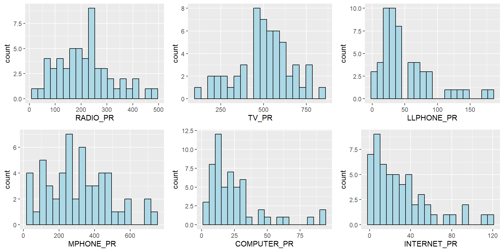
6.2 EDA using Choropleth Map
6.2.1 Joining Geospatial Data with Aspatial Data
Before we can prepare the choropleth map, we need to combine both the geospatial data object (i.e. shan_sf) and aspatial data.frame object (i.e. ict_derived) into one. This will be performed by using the left_join function of dplyr package. The shan_sf simple feature data.frame will be used as the base data object and the ict_derived data.frame will be used as the join table.
To join the data objects, we use the unique identifier, TS_PCODE.
file_path <- "data/rds/shan_sf.rds"
if (!file.exists(file_path)) {
shan_sf <- left_join(shan_sf, ict_derived, by = c("TS_PCODE" = "TS_PCODE"))
write_rds(shan_sf, file_path)
} else {
shan_sf <- read_rds(file_path)
}
kable(head(shan_sf))| ST | ST_PCODE | DT.x | DT_PCODE.x | TS.x | TS_PCODE | DT_PCODE.y | DT.y | TS.y | TT_HOUSEHOLDS | RADIO | TV | LLPHONE | MPHONE | COMPUTER | INTERNET | RADIO_PR | TV_PR | LLPHONE_PR | MPHONE_PR | COMPUTER_PR | INTERNET_PR | geometry |
|---|---|---|---|---|---|---|---|---|---|---|---|---|---|---|---|---|---|---|---|---|---|---|
| Shan (North) | MMR015 | Mongmit | MMR015D008 | Mongmit | MMR015017 | MMR015D003 | Kyaukme | Mongmit | 13652 | 3907 | 7565 | 482 | 3559 | 166 | 321 | 286.1852 | 554.1313 | 35.30618 | 260.6944 | 12.15939 | 23.513038 | MULTIPOLYGON (((96.96001 23… |
| Shan (South) | MMR014 | Taunggyi | MMR014D001 | Pindaya | MMR014006 | MMR014D001 | Taunggyi | Pindaya | 17544 | 7324 | 8862 | 348 | 2849 | 226 | 136 | 417.4647 | 505.1300 | 19.83584 | 162.3917 | 12.88190 | 7.751938 | MULTIPOLYGON (((96.7731 21…. |
| Shan (South) | MMR014 | Taunggyi | MMR014D001 | Ywangan | MMR014007 | MMR014D001 | Taunggyi | Ywangan | 18348 | 8890 | 4781 | 219 | 2207 | 81 | 152 | 484.5215 | 260.5734 | 11.93591 | 120.2856 | 4.41465 | 8.284282 | MULTIPOLYGON (((96.78483 21… |
| Shan (South) | MMR014 | Taunggyi | MMR014D001 | Pinlaung | MMR014009 | MMR014D001 | Taunggyi | Pinlaung | 25504 | 5908 | 13816 | 728 | 6363 | 351 | 737 | 231.6499 | 541.7189 | 28.54454 | 249.4903 | 13.76255 | 28.897428 | MULTIPOLYGON (((96.49518 20… |
| Shan (North) | MMR015 | Mongmit | MMR015D008 | Mabein | MMR015018 | MMR015D003 | Kyaukme | Mabein | 8632 | 3880 | 6117 | 628 | 3389 | 142 | 165 | 449.4903 | 708.6423 | 72.75255 | 392.6089 | 16.45042 | 19.114921 | MULTIPOLYGON (((96.66306 24… |
| Shan (South) | MMR014 | Taunggyi | MMR014D001 | Kalaw | MMR014005 | MMR014D001 | Taunggyi | Kalaw | 41341 | 11607 | 25285 | 1739 | 16900 | 1225 | 1741 | 280.7624 | 611.6204 | 42.06478 | 408.7951 | 29.63160 | 42.113156 | MULTIPOLYGON (((96.49518 20… |
6.2.2 Preparing a Choropleth Map
To have a quick look at the distribution of Radio penetration rate of Shan State at township level, a choropleth map will be prepared.
The code below is used to prepare the choropleth map by using the qtm() function of tmap package.
qtm(shan_sf, "RADIO_PR")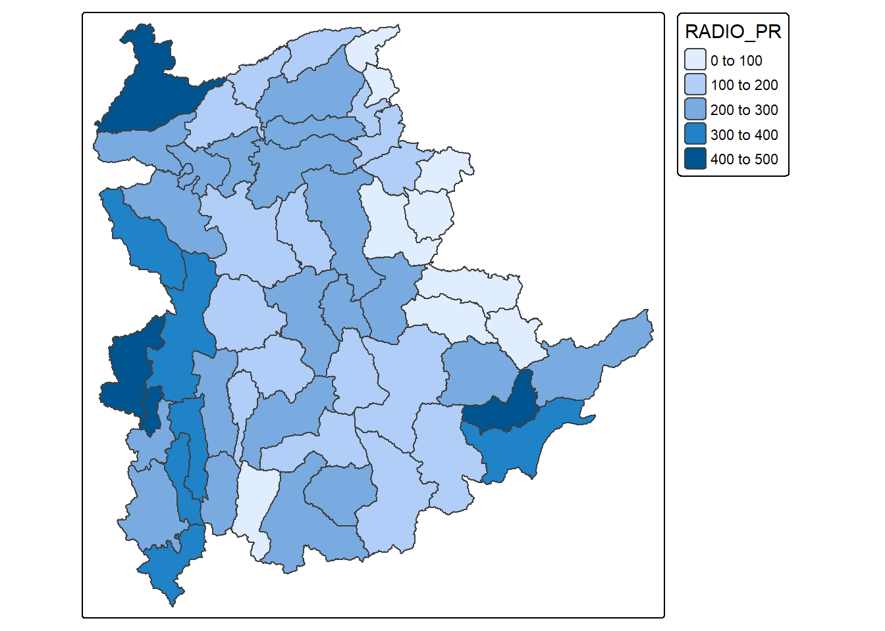
In order to reveal the distribution shown in the choropleth map above are bias to the underlying total number of households at the townships, we will create two choropleth maps, one for the total number of households (i.e. TT_HOUSEHOLDS.map) and one for the total number of household with Radio (RADIO.map) by using the code below.
TT_HOUSEHOLDS.map <- tm_shape(shan_sf) +
tm_fill(col = "TT_HOUSEHOLDS",
n = 5,
style = "jenks",
title = "Total households") +
tm_borders(alpha = 0.5)
RADIO.map <- tm_shape(shan_sf) +
tm_fill(col = "RADIO",
n = 5,
style = "jenks",
title = "Number Radio ") +
tm_borders(alpha = 0.5)
tmap_arrange(TT_HOUSEHOLDS.map, RADIO.map,
asp=NA, ncol=2)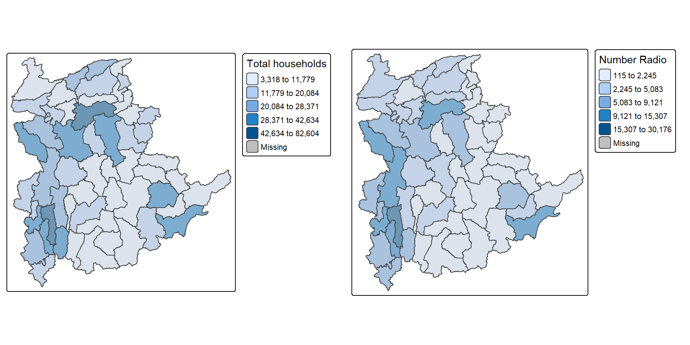
Notice that the choropleth maps above clearly show that townships with relatively larger number ot households are also showing relatively higher number of radio ownership.
Now let us plot the choropleth maps showing the distribution of total number of households and Radio penetration rate by using the code below.
tm_shape(shan_sf) +
tm_polygons(c("TT_HOUSEHOLDS", "RADIO_PR"),
style="jenks") +
tm_facets(sync = TRUE, ncol = 2) +
tm_legend(legend.position = c("right", "bottom"))+
tm_layout(outer.margins=0, asp=0)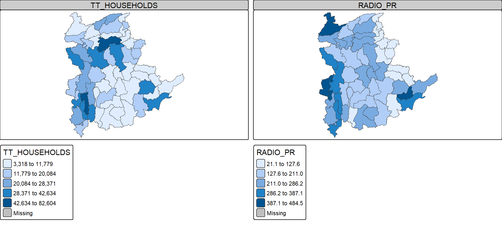
Note
At first glance, for the Distribution of total number of households and radios plot, it reveals that township with relative larger number of households also exhibit relatively higher number of radio ownership.
The penetration rate plot provides more nuanced insight into radio ownership, highlighting regions where radios are more common among households, regardless of the total number of households in the region. This may suggest radio ownership rate is no sole dependent on the total population but also on socio-economic factors, or policies etc.
7 Correlation Analysis
Before we perform cluster analysis, it is important for us to ensure that the cluster variables are not highly correlated.
In this section, we will use corrplot.mixed() function of corrplot package to visualise and analyse the correlation of the input variables.
cluster_vars.cor = cor(ict_derived[,12:17])
corrplot.mixed(cluster_vars.cor,
lower = "ellipse",
upper = "number",
tl.pos = "lt",
diag = "l",
tl.col = "black")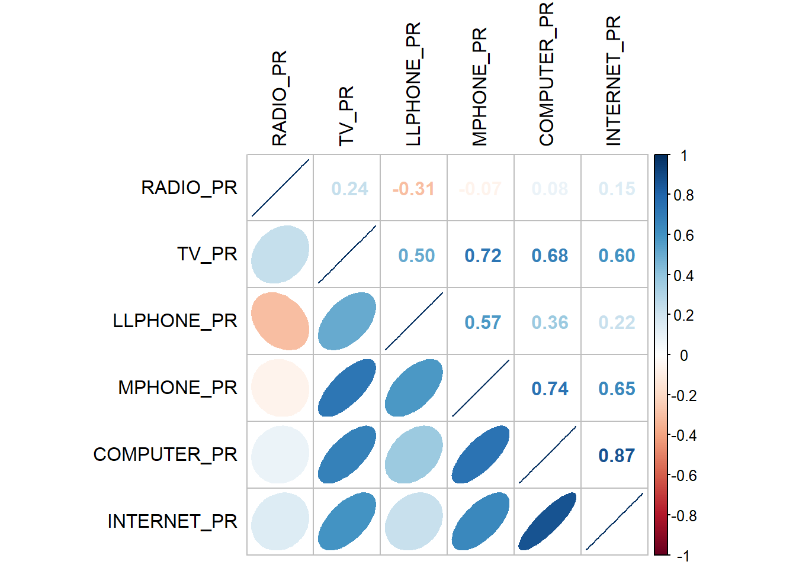
The correlation plot above shows that COMPUTER_PR and INTERNET_PR are highly correlated. This suggest that only one of them should be used in the cluster analysis instead of both.
8 Hierarchy Cluster Analysis
In this section, we will perform hierarchical cluster analysis.
8.1 Extracting Clustering Variables
The code below will be used to extract the clustering variables from the shan_sf simple feature object into data.frame.
cluster_vars <- shan_sf %>%
st_set_geometry(NULL) %>%
# we dont select INTERNET_PR
select("TS.x", "RADIO_PR", "TV_PR", "LLPHONE_PR", "MPHONE_PR", "COMPUTER_PR")
head(cluster_vars,10) TS.x RADIO_PR TV_PR LLPHONE_PR MPHONE_PR COMPUTER_PR
1 Mongmit 286.1852 554.1313 35.30618 260.6944 12.15939
2 Pindaya 417.4647 505.1300 19.83584 162.3917 12.88190
3 Ywangan 484.5215 260.5734 11.93591 120.2856 4.41465
4 Pinlaung 231.6499 541.7189 28.54454 249.4903 13.76255
5 Mabein 449.4903 708.6423 72.75255 392.6089 16.45042
6 Kalaw 280.7624 611.6204 42.06478 408.7951 29.63160
7 Pekon 318.6118 535.8494 39.83270 214.8476 18.97032
8 Lawksawk 387.1017 630.0035 31.51366 320.5686 21.76677
9 Nawnghkio 349.3359 547.9456 38.44960 323.0201 15.76465
10 Kyaukme 210.9548 601.1773 39.58267 372.4930 30.94709Notice that the final clustering variables list does not include variable INTERNET_PR because it is highly correlated with variable COMPUTER_PR.
Next, we need to change the rows by township name instead of row number by using the code below.
TS.x RADIO_PR TV_PR LLPHONE_PR MPHONE_PR COMPUTER_PR
Mongmit Mongmit 286.1852 554.1313 35.30618 260.6944 12.15939
Pindaya Pindaya 417.4647 505.1300 19.83584 162.3917 12.88190
Ywangan Ywangan 484.5215 260.5734 11.93591 120.2856 4.41465
Pinlaung Pinlaung 231.6499 541.7189 28.54454 249.4903 13.76255
Mabein Mabein 449.4903 708.6423 72.75255 392.6089 16.45042
Kalaw Kalaw 280.7624 611.6204 42.06478 408.7951 29.63160
Pekon Pekon 318.6118 535.8494 39.83270 214.8476 18.97032
Lawksawk Lawksawk 387.1017 630.0035 31.51366 320.5686 21.76677
Nawnghkio Nawnghkio 349.3359 547.9456 38.44960 323.0201 15.76465
Kyaukme Kyaukme 210.9548 601.1773 39.58267 372.4930 30.94709Notice that the row number has been replaced into the township name.
Then, we will delete the TS.x field.
RADIO_PR TV_PR LLPHONE_PR MPHONE_PR COMPUTER_PR
Mongmit 286.1852 554.1313 35.30618 260.6944 12.15939
Pindaya 417.4647 505.1300 19.83584 162.3917 12.88190
Ywangan 484.5215 260.5734 11.93591 120.2856 4.41465
Pinlaung 231.6499 541.7189 28.54454 249.4903 13.76255
Mabein 449.4903 708.6423 72.75255 392.6089 16.45042
Kalaw 280.7624 611.6204 42.06478 408.7951 29.63160
Pekon 318.6118 535.8494 39.83270 214.8476 18.97032
Lawksawk 387.1017 630.0035 31.51366 320.5686 21.76677
Nawnghkio 349.3359 547.9456 38.44960 323.0201 15.76465
Kyaukme 210.9548 601.1773 39.58267 372.4930 30.947098.2 Data Standardisation
In general, multiple variables will be used in cluster analysis. It is not unusual their values range are different. In order to avoid cluster analysis result to be biased due to the clustering variables with large values, it is useful to standardise the input variables before performing cluster analysis.
8.3 Min-Max standardisation
In the code below, we use:
-
normalize()of heatmaply package to standardise the clustering variables by using Min-Max method. -
summary()is then used to display the summary statistics of the standardised clustering variables.
shan_ict.std <- normalize(shan_ict)
summary(shan_ict.std) RADIO_PR TV_PR LLPHONE_PR MPHONE_PR
Min. :0.0000 Min. :0.0000 Min. :0.0000 Min. :0.0000
1st Qu.:0.2544 1st Qu.:0.4600 1st Qu.:0.1123 1st Qu.:0.2199
Median :0.4097 Median :0.5523 Median :0.1948 Median :0.3846
Mean :0.4199 Mean :0.5416 Mean :0.2703 Mean :0.3972
3rd Qu.:0.5330 3rd Qu.:0.6750 3rd Qu.:0.3746 3rd Qu.:0.5608
Max. :1.0000 Max. :1.0000 Max. :1.0000 Max. :1.0000
COMPUTER_PR
Min. :0.00000
1st Qu.:0.09598
Median :0.17607
Mean :0.23692
3rd Qu.:0.29868
Max. :1.00000 The value range of the Min-max standardised clustering variables are now 0 - 1.
8.4 Z-score standardisation
Z-score standardisation can be performed easily by using scale() of Base R. The code below will be used to stadardisation the clustering variables by using Z-score method.
shan_ict.z <- scale(shan_ict)
describe(shan_ict.z) vars n mean sd median trimmed mad min max range skew kurtosis
RADIO_PR 1 55 0 1 -0.04 -0.06 0.94 -1.85 2.55 4.40 0.48 -0.27
TV_PR 2 55 0 1 0.05 0.04 0.78 -2.47 2.09 4.56 -0.38 -0.23
LLPHONE_PR 3 55 0 1 -0.33 -0.15 0.68 -1.19 3.20 4.39 1.37 1.49
MPHONE_PR 4 55 0 1 -0.05 -0.06 1.01 -1.58 2.40 3.98 0.48 -0.34
COMPUTER_PR 5 55 0 1 -0.26 -0.18 0.64 -1.03 3.31 4.34 1.80 2.96
se
RADIO_PR 0.13
TV_PR 0.13
LLPHONE_PR 0.13
MPHONE_PR 0.13
COMPUTER_PR 0.13The mean and standard deviation of the Z-score standardised clustering variables are 0 and 1 respectively.
Tip
Note: describe() of psych package is used here instead of summary() of Base R because the earlier provides standard deviation.
Warning
Warning: Z-score standardisation method should only be used if we would assume all variables come from some normal distribution.
8.5 Visualising the Standardised Clustering Variables
Tip
It is a good practice to visualize the standardised clustering variables.
To plot the scaled Radio_PR field:
Show the code
r <- ggplot(data=ict_derived,
aes(x= `RADIO_PR`)) +
geom_histogram(bins=20,
color="black",
fill="light blue") +
ggtitle("Raw values without standardisation")
shan_ict_s_df <- as.data.frame(shan_ict.std)
s <- ggplot(data=shan_ict_s_df,
aes(x=`RADIO_PR`)) +
geom_histogram(bins=20,
color="black",
fill="light blue") +
ggtitle("Min-Max Standardisation")
shan_ict_z_df <- as.data.frame(shan_ict.z)
z <- ggplot(data=shan_ict_z_df,
aes(x=`RADIO_PR`)) +
geom_histogram(bins=20,
color="black",
fill="light blue") +
ggtitle("Z-score Standardisation")
ggarrange(r, s, z,
ncol = 3,
nrow = 1)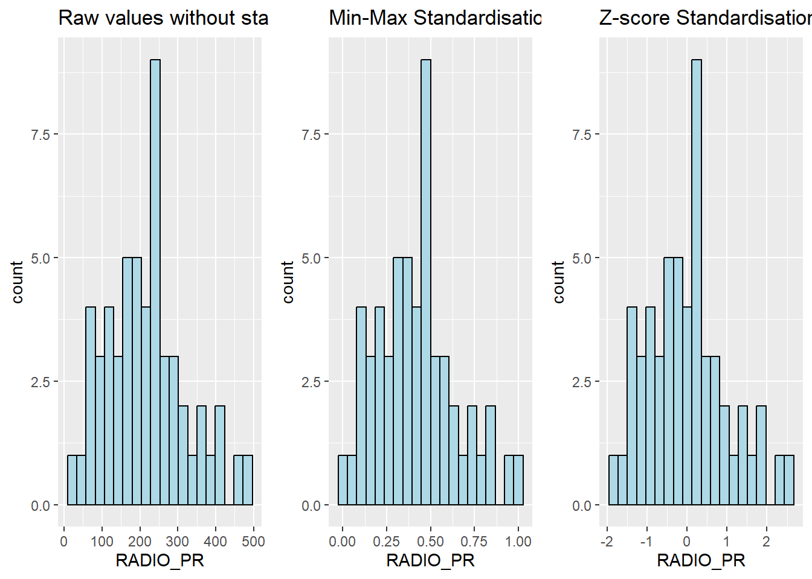
Note
What statistical conclusion can you draw from the histograms above?
The overall distribution of the clustering variables changes after the data standardisation.
Show the code
r <- ggplot(data=ict_derived,
aes(x= `RADIO_PR`)) +
geom_density(color="black",
fill="light blue") +
ggtitle("Raw values without standardisation")
shan_ict_s_df <- as.data.frame(shan_ict.std)
s <- ggplot(data=shan_ict_s_df,
aes(x=`RADIO_PR`)) +
geom_density(color="black",
fill="light blue") +
ggtitle("Min-Max Standardisation")
shan_ict_z_df <- as.data.frame(shan_ict.z)
z <- ggplot(data=shan_ict_z_df,
aes(x=`RADIO_PR`)) +
geom_density(color="black",
fill="light blue") +
ggtitle("Z-score Standardisation")
ggarrange(r, s, z,
ncol = 3,
nrow = 1)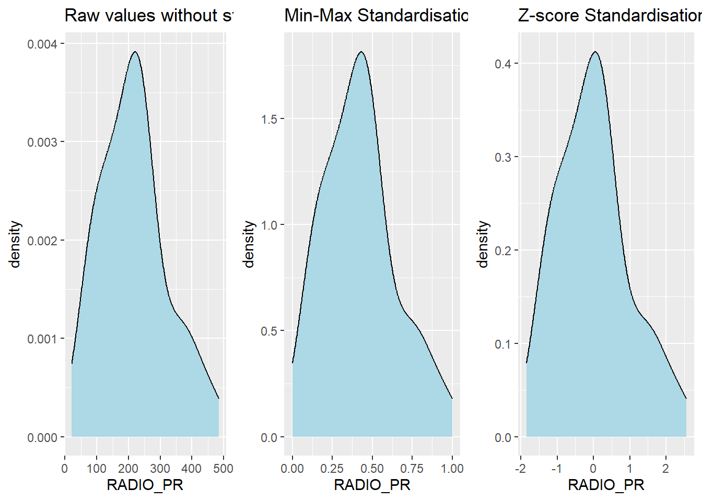
8.6 Calculating the Proximity Matrix
R offers several packages to compute distance matrices, and we will use the dist() function from the base package for this purpose.
The dist() function supports 6 types of distance calculations: - Euclidean, - Maximum, - Manhattan, - Canberra, - Binary, and - Minkowsk
By default, it uses the Euclidean distance.
Below is the code to compute the proximity matrix using the Euclidean method:
proxmat <- dist(shan_ict, method = 'euclidean')To view the contents of the computed proximity matrix (proxmat), you can use the following code:
proxmat8.7 Performing Hierarchical Clustering
In R, several packages offer hierarchical clustering functions. We will use the hclust() function from the stats package.
-
Method:
hclust()uses an agglomerative approach to compute clusters. -
8 Supported Clustering Algorithms:
ward.Dward.D2singlecomplete-
average(UPGMA) -
mcquitty(WPGMA) -
median(WPGMC) -
centroid(UPGMC)
The code chunk below performs hierarchical cluster analysis using ward.D method. The hierarchical clustering output is stored in an object of class hclust which describes the tree produced by the clustering process.
hclust_ward <- hclust(proxmat, method = 'ward.D')We can then plot the tree by using plot() of R Graphics.
plot(hclust_ward, cex = 0.6)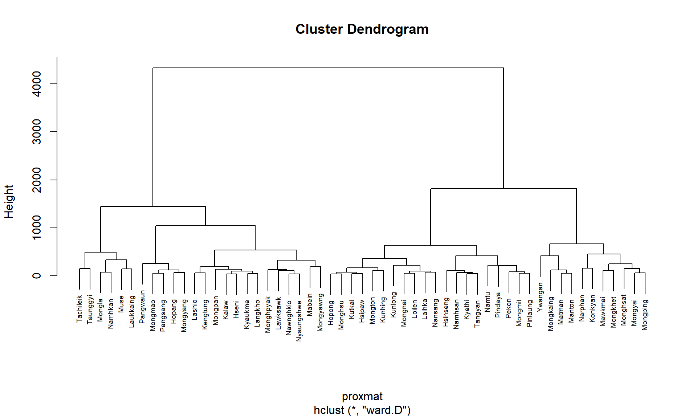
8.8 Choosing the Optimal Clustering Algorithm
One of the challenges in hierarchical clustering is identifying the method that provides the strongest clustering structure. This can be addressed by using the agnes() function from the cluster package. Unlike hclust(), the agnes() function also calculates the agglomerative coefficient—a measure of clustering strength (values closer to 1 indicate a stronger clustering structure).
The code chunk below will be used to compute the agglomerative coefficients of all hierarchical clustering algorithms.
m <- c( "average", "single", "complete", "ward")
names(m) <- c( "average", "single", "complete", "ward")
ac <- function(x) {
agnes(shan_ict, method = x)$ac
}
map_dbl(m, ac) average single complete ward
0.8131144 0.6628705 0.8950702 0.9427730
Note
The output shows that Ward’s method has the highest agglomerative coefficient, indicating the strongest clustering structure among the methods evaluated. Therefore, Ward’s method will be used for the subsequent analysis.
8.9 Determining Optimal Clusters
Another technical challenge faced by data analysts in performing clustering analysis is to determine the optimal clusters to retain.
There are 3 commonly used methods to determine the optimal clusters, they are:
8.10 Gap Statistic Method
The gap statistic helps determine the optimal number of clusters by comparing the total within-cluster variation for different values of k against their expected values under a random reference distribution. The optimal number of clusters is identified by the value of k that maximizes the gap statistic, indicating that the clustering structure is far from random.
To compute the gap statistic, use the clusGap() function from the cluster package:
set.seed(12345)
gap_stat <- clusGap(shan_ict,
FUN = hcut,
nstart = 25,
K.max = 10,
B = 50)
# use firstmax to get the location of the first local maximum.
print(gap_stat, method = "firstmax")Clustering Gap statistic ["clusGap"] from call:
clusGap(x = shan_ict, FUNcluster = hcut, K.max = 10, B = 50, nstart = 25)
B=50 simulated reference sets, k = 1..10; spaceH0="scaledPCA"
--> Number of clusters (method 'firstmax'): 1
logW E.logW gap SE.sim
[1,] 8.407129 8.680794 0.2736651 0.04460994
[2,] 8.130029 8.350712 0.2206824 0.03880130
[3,] 7.992265 8.202550 0.2102844 0.03362652
[4,] 7.862224 8.080655 0.2184311 0.03784781
[5,] 7.756461 7.978022 0.2215615 0.03897071
[6,] 7.665594 7.887777 0.2221833 0.03973087
[7,] 7.590919 7.806333 0.2154145 0.04054939
[8,] 7.526680 7.731619 0.2049390 0.04198644
[9,] 7.458024 7.660795 0.2027705 0.04421874
[10,] 7.377412 7.593858 0.2164465 0.04540947The hcut function is from the factoextra package.
To visualize the gap statistic, use the fviz_gap_stat() function from the factoextra package:
fviz_gap_stat(gap_stat)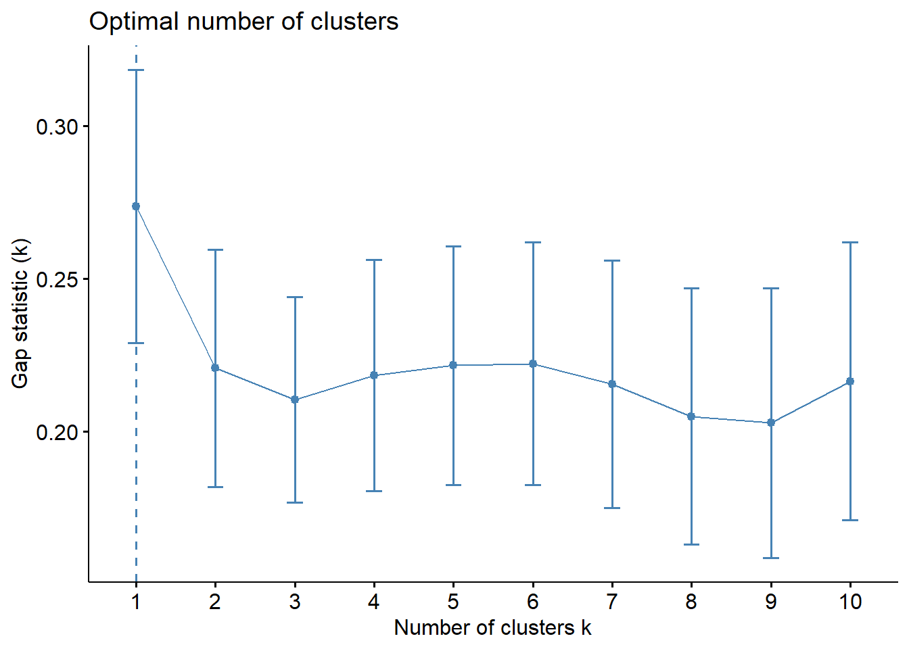
Note
From the gap statistic plot, the suggested number of clusters is 1. However, retaining only one cluster is not meaningful in most contexts. Examining the plot further, the 6-cluster solution has the largest gap statistic after 1, making it the next best choice.
Tip
Additional Note: The NbClust package offers 30 indices for determining the appropriate number of clusters. It helps users select the best clustering scheme by considering different combinations of cluster numbers, distance measures, and clustering methods (Charrad et al., 2014).
8.11 Interpreting the Dendrograms
A dendrogram visually represents the clustering of observations in hierarchical clustering:
- Leaves (Bottom of the Dendrogram): Each leaf represents a single observation.
- Branches and Fusions (Moving Up the Tree): Similar observations are grouped into branches. As we move up the tree, these branches merge at different heights.
- Height of Fusion (Vertical Axis): Indicates the level of (dis)similarity between merged observations or clusters. A greater height means the observations or clusters are less similar.
The similarity between two observations can only be assessed by the vertical height where their branches first merge. The horizontal distance between observations does not indicate their similarity.
To highlight specific clusters, use the rect.hclust() function to draw borders around clusters. The border argument specifies the colors for the rectangles.
The following code plots the dendrogram and draws borders around the 6 clusters:
plot(hclust_ward, cex = 0.6)
rect.hclust(hclust_ward,
k = 6,
border = 2:5)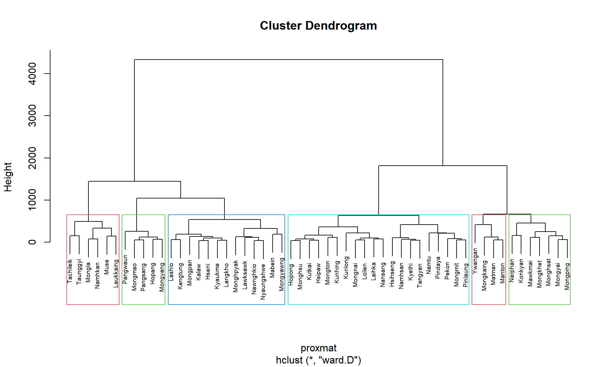
This visualization helps to easily identify and interpret the selected clusters in the dendrogram.
8.12 Visually-driven Hierarchical Clustering Analysis
With heatmaply, we are able to build both highly interactive cluster heatmap or static cluster heatmap.
8.12.1 Transforming the Data Frame into a Matrix
The data was loaded into a data frame, but it has to be a data matrix to make the heatmap.
The code below will be used to transform shan_ict data frame into a data matrix.
shan_ict_mat <- data.matrix(shan_ict)
class(shan_ict)[1] "data.frame"class(shan_ict_mat)[1] "matrix" "array" 8.12.2 Plotting Interactive Cluster Heatmap using heatmaply()
In the code below, the heatmaply() of heatmaply package is used to build an interactive cluster heatmap.
heatmaply(normalize(shan_ict_mat),
Colv=NA,
dist_method = "euclidean",
hclust_method = "ward.D",
seriate = "OLO",
colors = Blues,
k_row = 6,
margins = c(NA,200,60,NA),
fontsize_row = 4,
fontsize_col = 5,
main="Geographic Segmentation of Shan State by ICT indicators",
xlab = "ICT Indicators",
ylab = "Townships of Shan State"
)8.13 Mapping the Clusters Formed
Upon close examination of the dendrogram above, we have decided to retain 6 clusters.
- use cutree() of R Base to derive a 6-cluster model
The output is called groups. It is a factor object.
In order to visualise the clusters, the groups object need to be appended onto shan_sf simple feature object.
The code below form the join in three steps:
- the groups list object will be converted into a matrix;
-
cbind() is used to append groups matrix onto shan_sf to produce an output simple feature object called
shan_sf_cluster; and - rename of dplyr package is used to rename as.matrix.groups field as CLUSTER.
Next, qtm() of tmap package is used to plot the choropleth map showing the cluster formed.
qtm(shan_sf_cluster, "CLUSTER")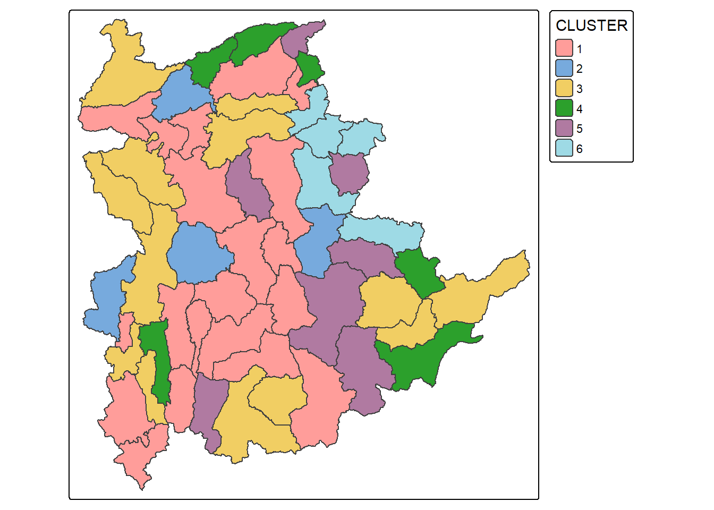
Note
The choropleth map above reveals the clusters are very fragmented. The is one of the major limitation when non-spatial clustering algorithm such as hierarchical cluster analysis method is used.